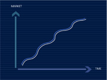
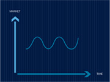
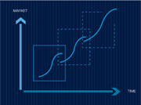

Segment A
- 
-
Bourbon’s development illustrates a strategic long-term investment into its marine offshore division that became, over time, its only business. In 1998, the decision was made to become a world leader of the MOS market. As of 2001, Bourbon focused its investments on marine services to the oil and gas offshore market.
Bourbon invested in the deepwater segment and used the growth-momentum (from 15% to 25% per year), emerging as an industry leader in 2010.
By innovating to offer competitive, new vessel designs to grow by substitution of old and obsolete shallow water vessels, a new market reference was created. Through expansion into sub-sea activities to service deep-sea and fuel-efficient vessels, BOURBON pioneered a new fast-growing market.
In essence, growing faster to gain market-share and drive cost down. Market-share determines profitability, long-term growth and value creation.
Segment B
- 
-
Ship owning and operating activities are cyclical by nature. Demand is influenced by world economic cycles; supply reflects waves of new building orders and strategies of owners.
For example, bulk activities went through different cycles depending on oversupply and the world economic crisis, which drove down returns and asset-value that in turn, dramatically reduce new building orders. This situation called for building new innovative vessels in order to benefit from the next upside. JACCAR decided to create an investment vehicle in Singapore, GREENSHIP Bulk, to enter with the newly designed CROWN 63 Supermax.
JACCAR ordered 8 new ethylene carriers to replace older vessels without creating an imbalance between supply and demand. GREENSHIP Gas was born!
After the market plunge of 2008, Bourbon sold its entire fleet at a timely moment in June 2010.
Market-cycle determines profitability and proper management of the cycle provides value creation.
Segment C
- 
-
Between 2003 and 2009 a window-of-opportunity opened to invest in the shipbuilding industry in China.
As a developing country willing to become a world leader in key industries, China actively promoted shipbuilding activity to take over market share from Europe, Japan and Korea.
By 2010 the gap had closed, China having reached its target, the competitive conditions stabilized.
During the same period of time, the market experienced an unprecedented boom in the three main segments of bulk, container, and tanker shipbuilding.
Greenfield new yard projects were financed by deposit from customers desperate to get newly built vessels and prices soared. That particular window closed in 2009, following the world financial crisis.
SINOPACIFIC Shipbuilding Group was established in 2003, expanding through favorable market conditions in terms of vessels sold and profit made. Conditions have since changed, opening a new window-of-opportunity but with very different characteristics and key factors.
Profitability comes from transitory market innovation, competitive conditions and value creation derives from entry and exit decisions.

- Segment A
- Segment B
- Segment C